Comunicarea cu pacientul: explicarea programului de exerciții la domiciliu și sfatul scurt
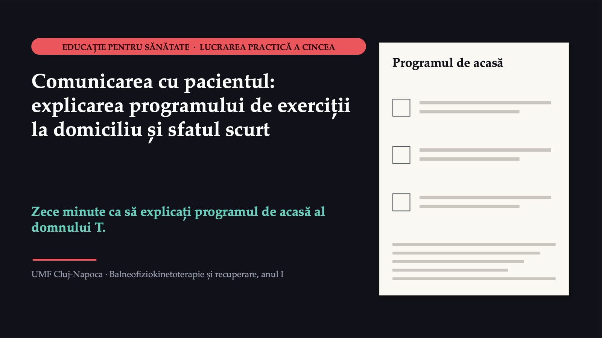
1 / 50Ultima ședință din sală
![DOUĂ LUCRURI SCHIMBATE DUPĂ RĂSPUNSURILE VOASTRE [le anunță cadrul didactic] Ultima ședință din sală CAZ CONSTRUIT · ACTUL ÎNTÂI Domnul T., curier, a fost operat de o fractură de gleznă. Azi este ultima lui ședință în sala de recuperare. Fizioterapeutul i-a alcătuit programul de acasă: trei exerciții, zilnic. Vă rămân zece minute ca să i-l explicați. Domnul T.: „Dați-mi foaia, că le fac eu acasă.” În fișa lui, la stil de viață, scrie: „fumător”. Cazul este construit: detaliile sunt plauzibile, nu reale.](diapozitive/LP05/002.jpg) 2 / 50
2 / 50Lucrarea de azi, în trei acte
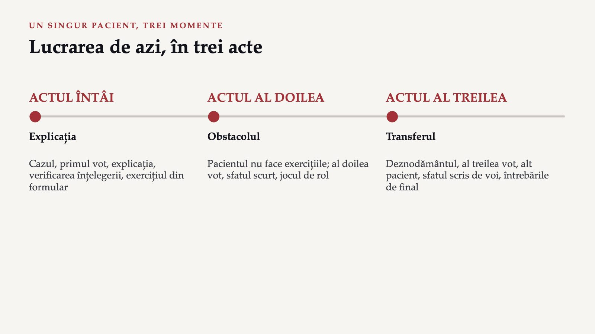
3 / 50La final, puteți:
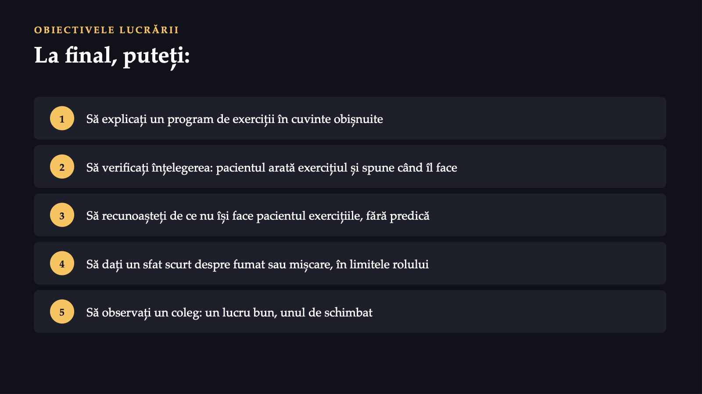
4 / 50Ați explicat exercițiile. Cum verificați că domnul T. a înțeles?
![MENTIMETER · VOT ACTUL ÎNTÂI · DECIZIA ÎNTÂI · VOT INDIVIDUAL Ați explicat exercițiile. Cum verificați că domnul T. a înțeles? A Îl întrebați „Ați înțeles?” și, dacă spune „da”, îi dați foaia cu exercițiile B Repetați explicația încă o dată, mai rar, ca să fiți siguri că a reținut-o bine C Îi cereți să semneze foaia cu exercițiile, ca dovadă că a fost instruit despre ele D Îl rugați să arate exercițiile și să spună când le face și ce face la durere Răspundeți pe telefon, la codul afișat. [codul QR Mentimeter] Vot individual, fără discuție. Rezultatele rămân ascunse.](diapozitive/LP05/005.jpg) 5 / 50
5 / 50Convingeți-l pe cel care a votat altfel
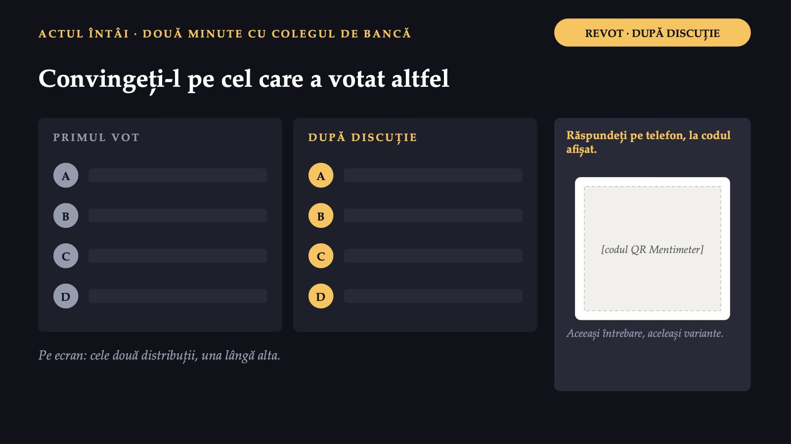
6 / 50Răspunsul apare după ședință
Răspunsul apare după ședință
Răspunsul apare după ședință
Răspunsul apare după ședință
Răspunsul apare după ședință
Răspunsul apare după ședință
Porniți de la ce vrea pacientul, nu de la anatomie
 10 / 50
10 / 50Se încheie cu verificarea, nu cu foaia
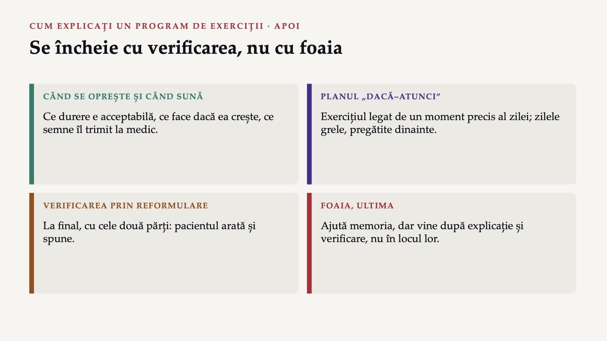
11 / 50Termenii de specialitate rămân pentru colegi
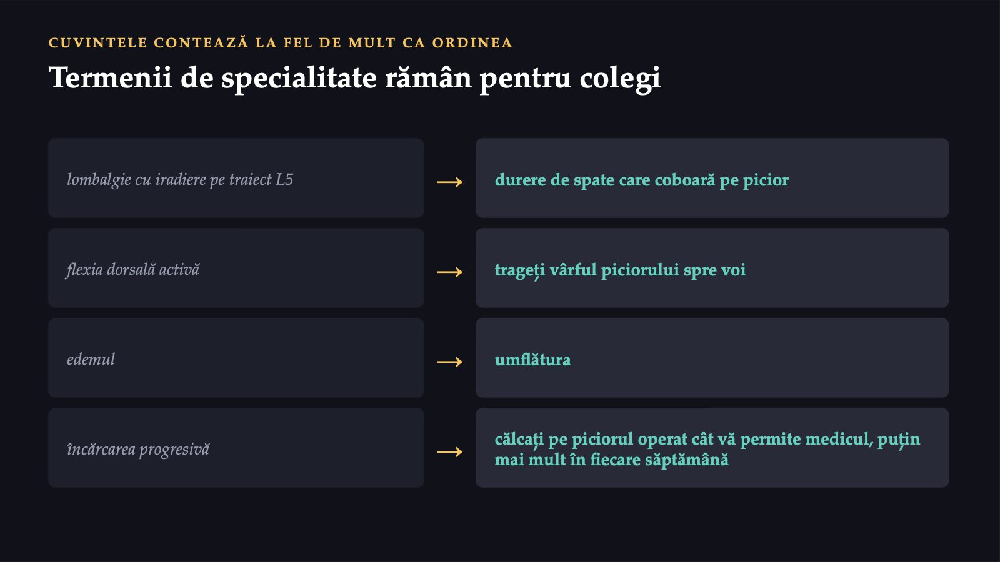
12 / 50Mesajul principal și cele trei exerciții
![CELE ZECE MINUTE ALE DOMNULUI T. · ÎNTÂI Mesajul principal și cele trei exerciții VALORI IPOTETICE MESAJUL PRINCIPAL „Aceste trei exerciții vă dezumflă glezna și vă ajută să urcați scările fără durere. Le facem acum împreună, apoi le faceți acasă de 3 ori pe zi.” EXERCIȚIUL 1, DIN ȘEZUT „Trageți vârful piciorului spre voi, apoi împingeți-l în jos, ca pe o pedală. De 10 ori.” EXERCIȚIUL 2, CU UN PROSOP „Trageți ușor de prosop până simțiți că se întinde pulpa. Țineți cât numărați până la 20. De 3 ori.” EXERCIȚIUL 3, ÎN PICIOARE „Ridicați-vă pe vârfuri și coborâți încet. De 10 ori, numai cât vă permite medicul.”](diapozitive/LP05/013.jpg) 13 / 50
13 / 50Semnele de oprire, planul și verificarea
![CELE ZECE MINUTE ALE DOMNULUI T. · APOI Semnele de oprire, planul și verificarea VALORI IPOTETICE CÂND SE OPREȘTE „O durere ușoară în timpul exercițiului, care trece în câteva minute, este acceptabilă. Dacă durerea crește și nu trece până a doua zi, faceți jumătate și ne sunați.” PLANUL „La ce oră vă e cel mai ușor? Dimineața, înainte de primul transport, la prânz și seara, înainte de cină.” VERIFICAREA „Ca să fiu sigur că v-am explicat bine, îmi arătați exercițiul cu prosopul și îmi spuneți când îl faceți?”](diapozitive/LP05/014.jpg) 14 / 50
14 / 50Rezolvarea se vede în formularul fișei, după ce o predați.
Rezolvarea se vede în formularul fișei, după ce o predați.
Rezolvarea se vede în formularul fișei, după ce o predați.
Rezolvarea se vede în formularul fișei, după ce o predați.
Răspunsul apare după ședință
Răspunsul apare după ședință
Răspunsul apare după ședință
Răspunsul apare după ședință
La control, o săptămână mai târziu
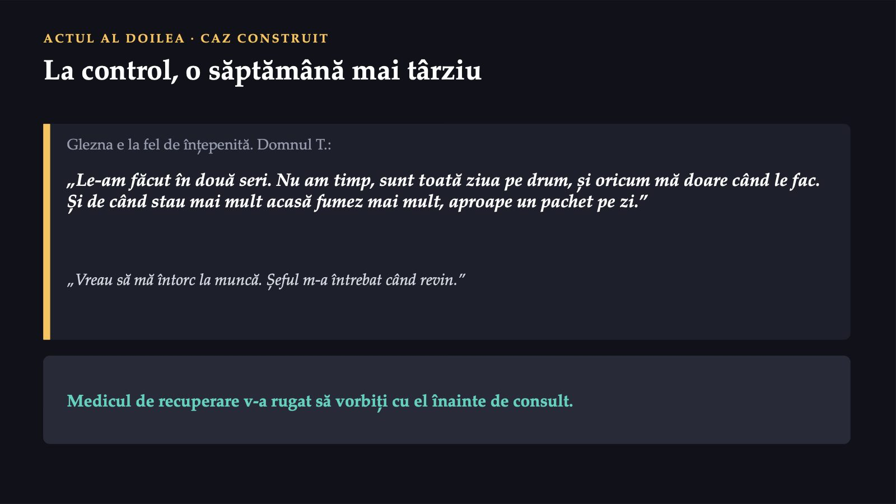
19 / 5050%
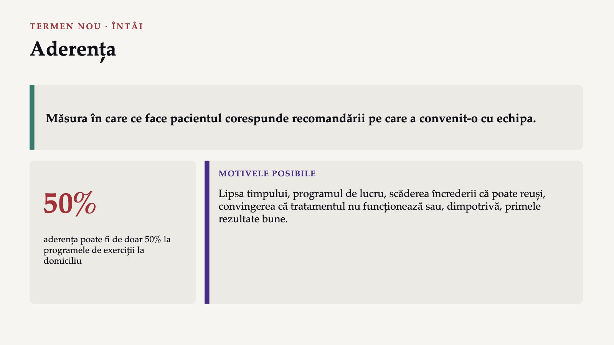
20 / 50Ambivalența
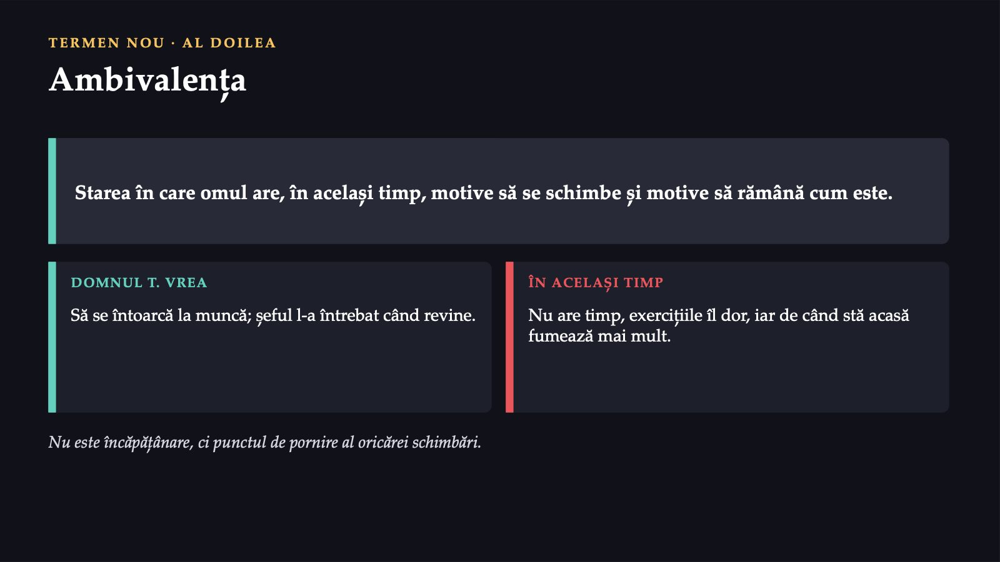
21 / 50Ce faceți acum, în cele cinci minute dinainte de consult?
![MENTIMETER · VOT ACTUL AL DOILEA · DECIZIA A DOUA · VOT INDIVIDUAL Ce faceți acum, în cele cinci minute dinainte de consult? A Îi spuneți ferm că exercițiile sunt obligatorii, că altfel glezna rămâne înțepenită, și îi explicați din nou tot programul B Îl întrebați ce l-a împiedicat, îi spuneți ce ați auzit, alegeți un pas mic cu plan „dacă–atunci” și verificați din nou C Notați în fișă că pacientul nu cooperează și îi propuneți medicului să oprească recuperarea până se hotărăște D Îi recomandați o aplicație de telefon cu mementouri pentru exerciții și treceți direct la consultul medicului Răspundeți pe telefon, la codul afișat. [codul QR Mentimeter] Vot individual, fără discuție. Rezultatele rămân ascunse.](diapozitive/LP05/022.jpg) 22 / 50
22 / 50Convingeți-l pe cel care a votat altfel
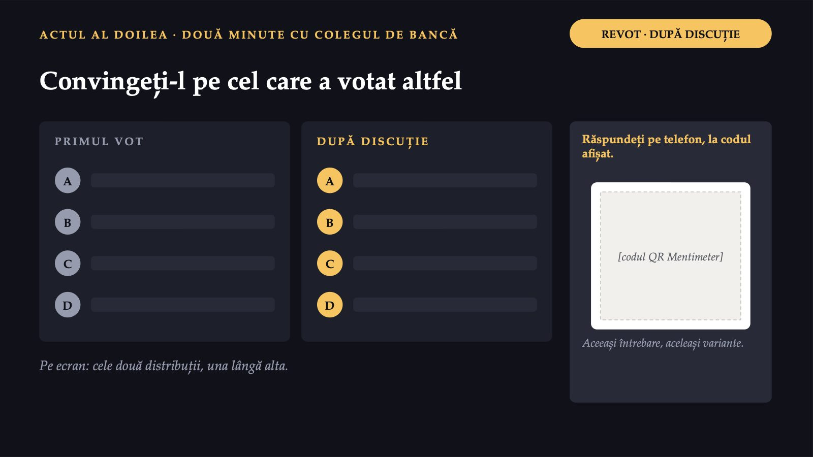
23 / 50Răspunsul apare după ședință
Răspunsul apare după ședință
Reducerea programului se face în limita prescripției
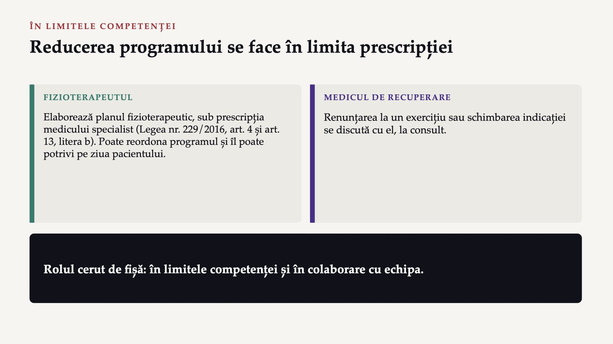
25 / 50Răspunsul apare după ședință
Răspunsul apare după ședință
Sfatul scurt
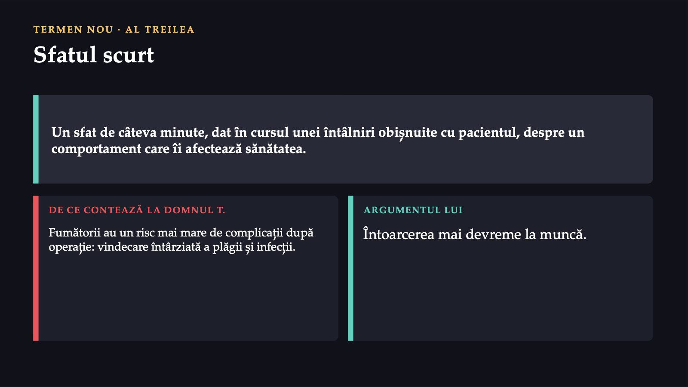
27 / 5030 s – 3 min
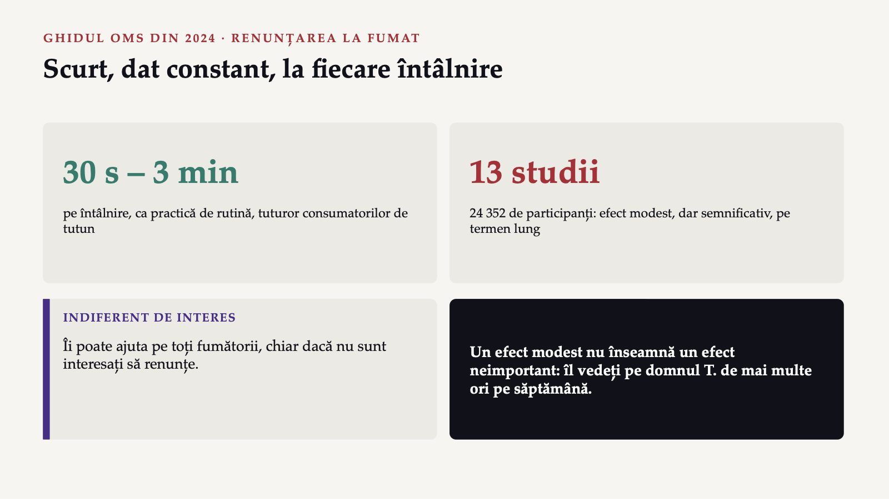
28 / 50Cinci pași, în limitele rolului vostru
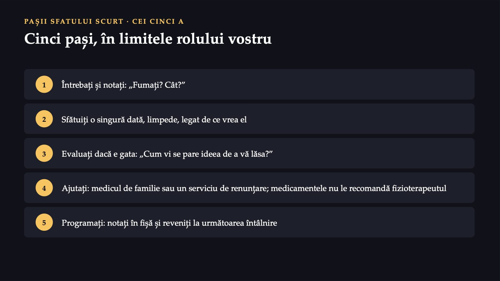
29 / 50Întâi ascultați, apoi reflectați
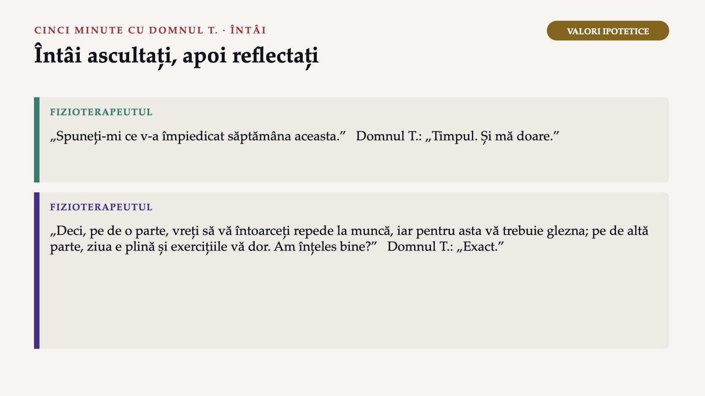
30 / 50Un pas mic, într-un moment precis
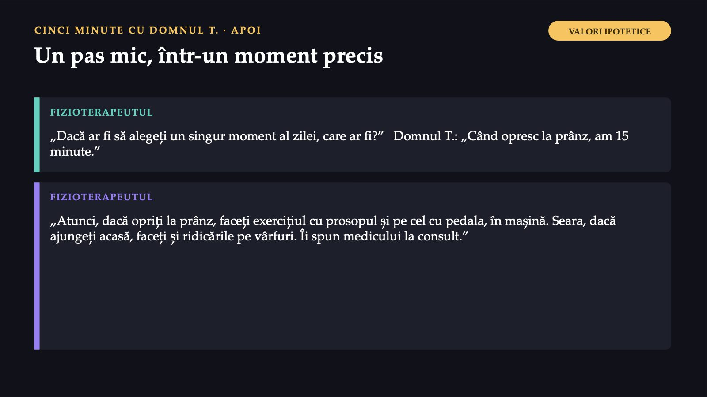
31 / 50Sfatul scurt și verificarea de la final
![CINCI MINUTE CU DOMNUL T. · LA FINAL Sfatul scurt și verificarea de la final VALORI IPOTETICE FIZIOTERAPEUTUL „Ați spus că fumați mai mult. Pot să vă spun ceva despre asta? Fumatul întârzie vindecarea după operație. Dacă renunțați, glezna are șanse mai bune să se refacă la timp pentru muncă. Cum vi se pare ideea?” Domnul T.: „Nu știu dacă pot.” „Medicul de familie vă poate ajuta, inclusiv cu un tratament. Vreți să vă notez să vorbiți cu el?” LA FINAL „Ca să fiu sigur că ne-am înțeles, ce faceți mâine la prânz?”](diapozitive/LP05/032.jpg) 32 / 50
32 / 50Jocul de rol în trei
![JOC DE ROL · TREI RUNDE ACTUL AL DOILEA · INSTRUMENTUL LUCRĂRII Jocul de rol în trei 1 Grupuri de câte trei: fizioterapeut, pacient, observator. La patru, doi observatori 2 Cinci minute de conversație, apoi două minute: un lucru bun, un lucru de schimbat, cu fraza exactă 3 Rolurile se schimbă după fiecare rundă; pacientul e altul REGULA FIZIOTERAPEUTULUI Fără „trebuie”. Fără „Ați înțeles?”. Puteți începe cu: „Spuneți-mi cum a mers săptămâna aceasta cu exercițiile.” Fișele fizioterapeutului și observatorului sunt în Pregătire.](diapozitive/LP05/033.jpg) 33 / 50
33 / 50Rezolvarea se vede în formularul fișei, după ce o predați.
Rezolvarea se vede în formularul fișei, după ce o predați.
Doamna L.
![JOC DE ROL · RUNDA ÎNTÂI ACTUL AL DOILEA · RUNDA ÎNTÂI Doamna L. CINE ESTE Funcționară la un ghișeu, cu dureri de spate de mai bine de un an. EXERCIȚIUL DIN PROGRAMUL LUI (VALORI IPOTETICE) Culcată pe spate, cu genunchii îndoiți, ridică încet bazinul, ține cât numără până la cinci și coboară; de zece ori, dimineața și seara. Prima frază: „Am încercat, dar mă doare mai rău după.” [QR PACIENT 1] Pacientul scanează codul și citește partea ascunsă a fișei. Nu o arătați celorlalți.](diapozitive/LP05/035.jpg) 35 / 50
35 / 50Andrei
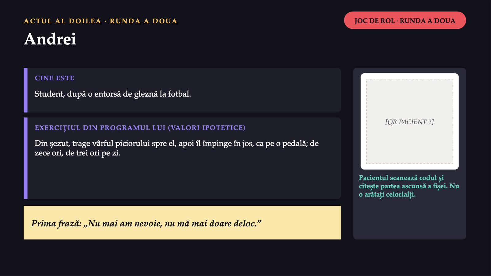
36 / 50Domnul G.
![JOC DE ROL · RUNDA A TREIA ACTUL AL DOILEA · RUNDA A TREIA Domnul G. CINE ESTE Pensionar, cu durere de genunchi la mers de câțiva ani. EXERCIȚIUL DIN PROGRAMUL LUI (VALORI IPOTETICE) Așezat pe un scaun, întinde încet genunchiul până când piciorul e drept, ține cât numără până la cinci și coboară încet; de zece ori cu fiecare picior, dimineața și seara. Prima frază: „Eu am venit pentru aparate, nu pentru gimnastică.” [QR PACIENT 3] Pacientul scanează codul și citește partea ascunsă a fișei. Nu o arătați celorlalți.](diapozitive/LP05/037.jpg) 37 / 50
37 / 50Doamna L.: ce știți numai voi
![PARTEA ASCUNSĂ A FIȘEI · NU O ARĂTAȚI CELORLALȚI Doamna L.: ce știți numai voi CE ȘTIȚI NUMAI VOI Nu faceți exercițiile, pentru că vă e teamă că vă „stricați” coloana; când v-a durut după un exercițiu, ați crezut că v-ați făcut rău. Fumați de la douăzeci de ani și ați încercat o dată să vă lăsați. CUM REACȚIONAȚI Dacă fizioterapeutul vă spune că „trebuie”, răspundeți scurt și nu mai spuneți nimic despre teamă. Dacă vă întreabă ce v-a speriat, îi spuneți. Dacă vă spune o dată, fără să vă certe, ce ați câștiga renunțând și vă întreabă dacă vreți ajutor, recunoașteți că v-ați gândit să mai încercați.](diapozitive/LP05/038.jpg) 38 / 50
38 / 50Andrei: ce știți numai voi
![PARTEA ASCUNSĂ A FIȘEI · NU O ARĂTAȚI CELORLALȚI Andrei: ce știți numai voi CE ȘTIȚI NUMAI VOI Ați făcut exercițiile patru zile, apoi nu v-a mai durut și v-ați oprit; credeți că, dacă nu doare, glezna e vindecată. Stați mult la calculator și nu mai faceți niciun sport de când v-ați lovit. CUM REACȚIONAȚI Dacă vi se explică anatomia gleznei, vă uitați la telefon. Dacă fizioterapeutul vă întreabă ce vreți să faceți din nou (să jucați fotbal cu prietenii), ascultați. Dacă vă propune un pas mic și precis, îl acceptați.](diapozitive/LP05/039.jpg) 39 / 50
39 / 50Domnul G.: ce știți numai voi
![PARTEA ASCUNSĂ A FIȘEI · NU O ARĂTAȚI CELORLALȚI Domnul G.: ce știți numai voi CE ȘTIȚI NUMAI VOI Ați vrut „curenți și masaj”, nu exerciții; credeți că exercițiile sunt pentru tineri. Fumați un pachet pe zi și nu vreți să vă lăsați. CUM REACȚIONAȚI Dacă fizioterapeutul insistă cu fumatul, vă supărați. Dacă vă spune limpede, o singură dată, că renunțarea v-ar ajuta și vă întreabă dacă vreți ajutor, răspundeți „nu acum”, dar nu vă supărați. Dacă vă întreabă ce v-ar plăcea să puteți face (să mergeți la piață fără oprire), vorbiți.](diapozitive/LP05/040.jpg) 40 / 50
40 / 50Răspunsul apare după ședință
Răspunsul apare după ședință
Alt pacient, alt comportament: doamna E.
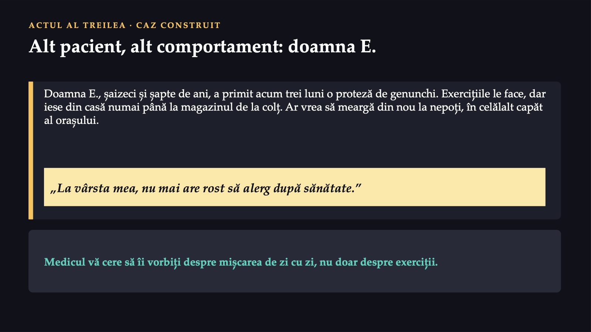
42 / 50Care este prima voastră frază pentru doamna E.?
![MENTIMETER · VOT ACTUL AL TREILEA · DECIZIA A TREIA · FĂRĂ REVOT Care este prima voastră frază pentru doamna E.? A „Ghidul OMS recomandă cel puțin 150 de minute de mers pe săptămână; trebuie să ajungeți acolo.” B „Ce v-ar plăcea să puteți face din nou?”, apoi un pas mic, legat de răspunsul ei C Îi dați un pliant cu recomandările OMS pentru vârstnici și o rugați să îl citească acasă D „La vârsta dumneavoastră e normal să vă odihniți mai mult; nu vă forțați.” Răspundeți pe telefon, la codul afișat. [codul QR Mentimeter] Vot individual, fără revot.](diapozitive/LP05/043.jpg) 43 / 50
43 / 50Răspunsul apare după ședință
Răspunsul apare după ședință
Răspunsul apare după ședință
Răspunsul apare după ședință
Rezolvarea se vede în formularul fișei, după ce o predați.
Rezolvarea se vede în formularul fișei, după ce o predați.
Cinci criterii, fiecare „îndeplinit” sau „de refăcut”
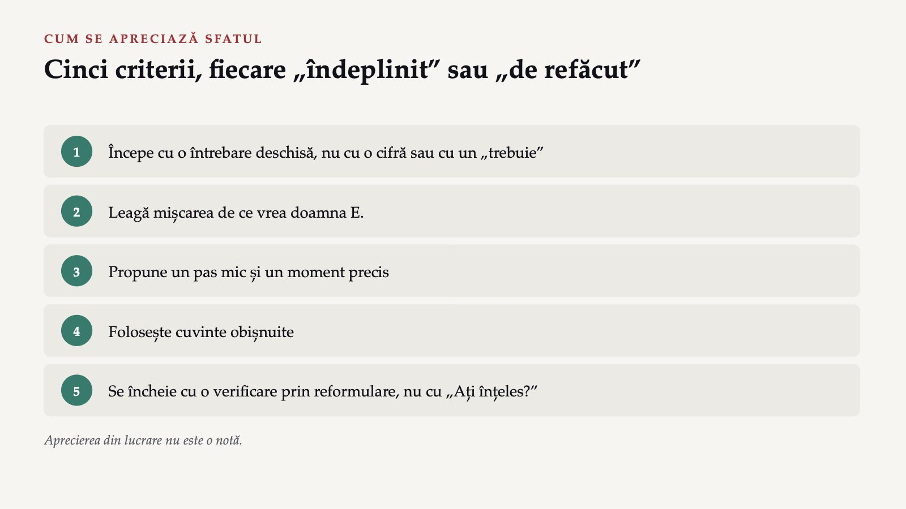
47 / 50Răspunsul apare după ședință
Răspunsul apare după ședință
Trei limite ale dovezilor
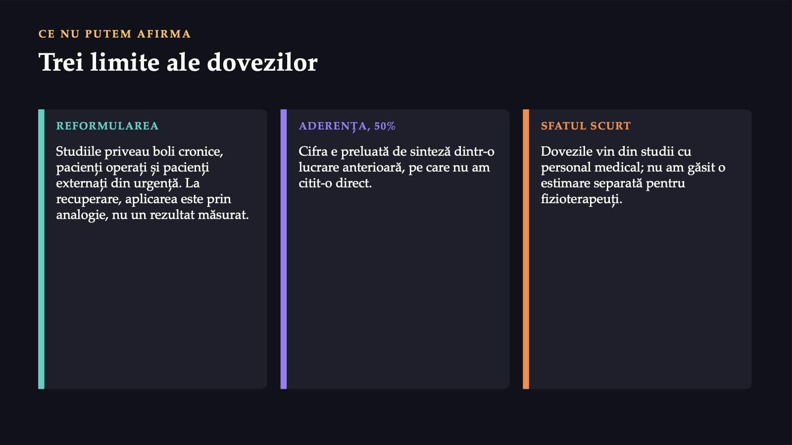
49 / 50Ce a fost util?
![ULTIMELE CINCI MINUTE · ANONIM CE FACEȚI DIFERIT DE MÂINE, CA LA DOMNUL T. 1 Nu mai încheiați cu „Ați înțeles?”, ci cu „Îmi arătați?” 2 Pacientul nu și-a făcut exercițiile? Întrebați întâi ce l-a împiedicat. 3 Fumează sau nu se mișcă? O dată, limpede, ce ar câștiga; întrebați dacă vrea ajutor; notați. TREI ÎNTREBĂRI PENTRU FINAL 1 Ce a fost util? 2 Unde v-am pierdut? 3 Ce ați putea folosi mâine? [codul QR Mentimeter] Răspundeți pe telefon, la codul afișat. Răspunsurile sunt anonime.](diapozitive/LP05/050.jpg) 50 / 50
50 / 50Săgeți sau spațiu: navigare · O: vedere de ansamblu · N: notele prezentatorului · F: ecran complet · Esc: închidere